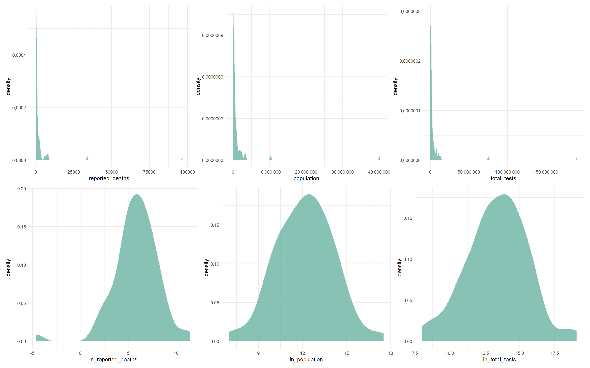
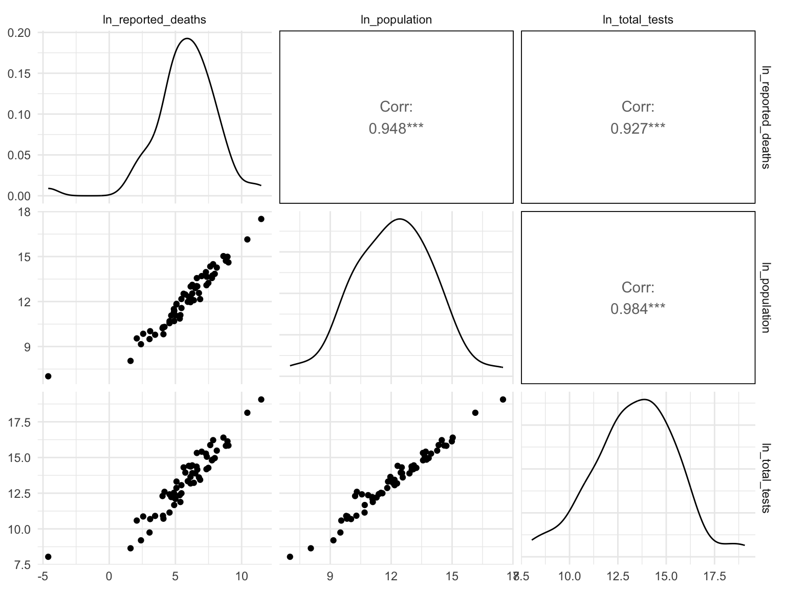
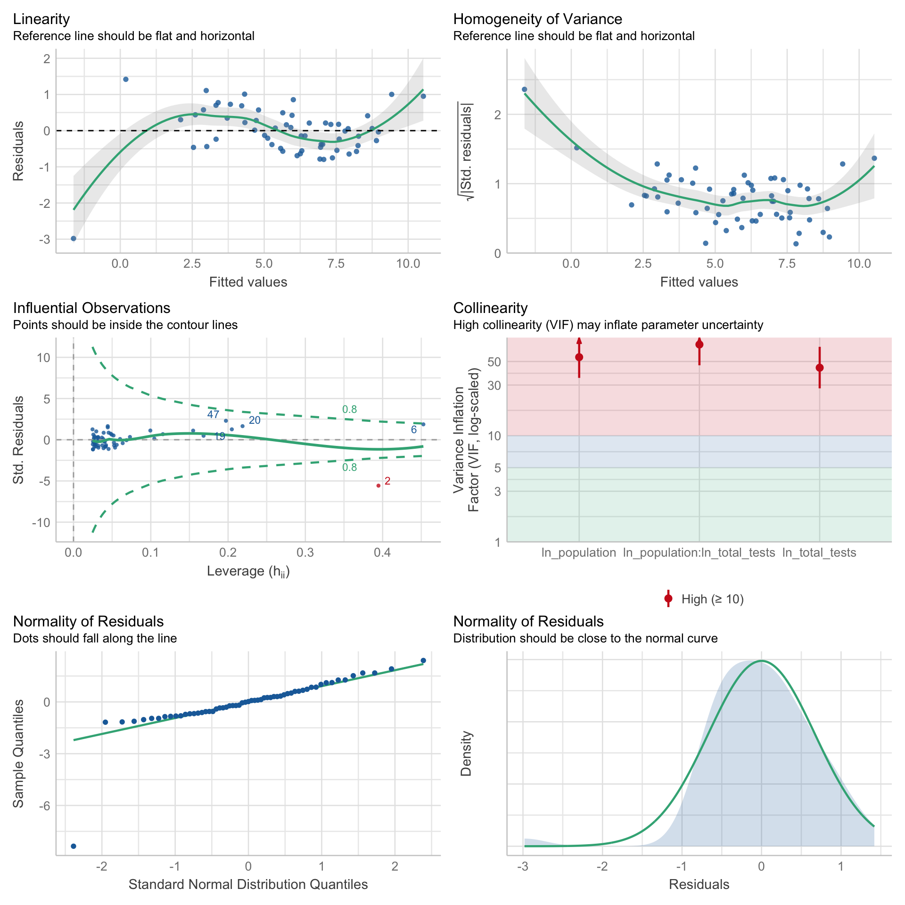

demo_raw = read_csv("./data/Demo.csv") %>%
janitor::clean_names() %>%
filter(!area %in% c("Unknown", "Out of state")) %>%
select(area, population, total_tests, reported_deaths) %>%
group_by(area) %>%
summarize(
population = max(population),
total_tests = sum(total_tests,na.rm = T),
reported_deaths = sum(reported_deaths)
)
head(demo_raw)## # A tibble: 6 × 4
## area population total_tests reported_deaths
## <chr> <dbl> <dbl> <dbl>
## 1 Alameda 1685886 7811141 2059
## 2 Alpine 1117 3125 0
## 3 Amador 38531 247940 95
## 4 Butte 217769 532684 465
## 5 Calaveras 44289 117406 135
## 6 California 40129160 190312970 96701area, population and
testing_cases.rawplot_death = demo_raw %>%
ggplot(aes(x=reported_deaths)) +
geom_density(fill="#69b3a2", color="#e9ecef", alpha=.8)
rawplot_death_population = demo_raw %>%
ggplot(aes(x=population)) +
geom_density(fill="#69b3a2", color="#e9ecef", alpha=.8)
rawplot_death_tests = demo_raw %>%
ggplot(aes(x=total_tests)) +
geom_density(fill="#69b3a2", color="#e9ecef", alpha=.8)
demo_death = demo_raw %>%
mutate(ln_population = log(population+0.01),
ln_total_tests = log(total_tests+0.01),
ln_reported_deaths = log(reported_deaths+0.01)) %>%
dplyr::select(-population,-total_tests,-reported_deaths) %>%
relocate(ln_reported_deaths)
plot_death = demo_death %>%
ggplot(aes(x=ln_reported_deaths)) +
geom_density(fill="#69b3a2", color="#e9ecef", alpha=.8)
plot_death_population = demo_death %>%
ggplot(aes(x=ln_population)) +
geom_density(fill="#69b3a2", color="#e9ecef", alpha=.8)
plot_death_tests = demo_death %>%
ggplot(aes(x=ln_total_tests)) +
geom_density(fill="#69b3a2", color="#e9ecef", alpha=.8)
(rawplot_death + rawplot_death_population + rawplot_death_tests)/(plot_death+plot_death_population+plot_death_tests)
demo_death %>%
select(-area) %>%
gtsummary::tbl_summary() %>%
gtsummary::bold_labels()| Characteristic | N = 591 |
|---|---|
| ln_reported_deaths | 6.01 (4.78, 7.32) |
| ln_population | 12.17 (10.78, 13.57) |
| ln_total_tests | 13.44 (12.22, 14.83) |
| 1 Median (IQR) | |
ncol(demo_death) including ln_reported_deaths, area,
ln_population, ln_total_tests. The data is extremely right-skewed and
the natural logarithms are applied to each explortory continuous
variables.demo_death %>%
select(-area) %>%
GGally::ggpairs()
reg_full = lm(ln_reported_deaths ~ ln_population*ln_total_tests, data = demo_death)
summary(reg_full)##
## Call:
## lm(formula = ln_reported_deaths ~ ln_population * ln_total_tests,
## data = demo_death)
##
## Residuals:
## Min 1Q Median 3Q Max
## -2.98087 -0.42610 0.01347 0.41698 1.41876
##
## Coefficients:
## Estimate Std. Error t value Pr(>|t|)
## (Intercept) -17.48351 2.36741 -7.385 8.82e-10 ***
## ln_population 2.28424 0.34072 6.704 1.15e-08 ***
## ln_total_tests 0.38466 0.27447 1.401 0.166692
## ln_population:ln_total_tests -0.05786 0.01455 -3.977 0.000206 ***
## ---
## Signif. codes: 0 '***' 0.001 '**' 0.01 '*' 0.05 '.' 0.1 ' ' 1
##
## Residual standard error: 0.6878 on 55 degrees of freedom
## Multiple R-squared: 0.9228, Adjusted R-squared: 0.9186
## F-statistic: 219.3 on 3 and 55 DF, p-value: < 2.2e-16sd_function <- lm(abs(reg_full$residuals) ~ reg_full$fitted.values)
var_fitted <- sd_function$fitted.values^2
wt <- 1/var_fitted
wls_death <- lm(ln_reported_deaths ~ ln_population*ln_total_tests, data = demo_death, weights = wt)
summary(wls_death)##
## Call:
## lm(formula = ln_reported_deaths ~ ln_population * ln_total_tests,
## data = demo_death, weights = wt)
##
## Weighted Residuals:
## Min 1Q Median 3Q Max
## -3.8499 -0.7453 0.0995 0.8463 2.7234
##
## Coefficients:
## Estimate Std. Error t value Pr(>|t|)
## (Intercept) -9.065122 1.888322 -4.801 1.25e-05 ***
## ln_population 1.455830 0.259550 5.609 6.83e-07 ***
## ln_total_tests -0.096501 0.212896 -0.453 0.652
## ln_population:ln_total_tests -0.009248 0.008338 -1.109 0.272
## ---
## Signif. codes: 0 '***' 0.001 '**' 0.01 '*' 0.05 '.' 0.1 ' ' 1
##
## Residual standard error: 1.211 on 55 degrees of freedom
## Multiple R-squared: 0.9787, Adjusted R-squared: 0.9776
## F-statistic: 844 on 3 and 55 DF, p-value: < 2.2e-16par(mfrow = c(2, 4))
plot(reg_full)
plot(wls_death)
ln_population
predictor variable changed somewhat and the model fit improved.